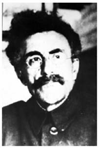

Христофор (Хачатур) Георгиевич Шапошников
Несколько слов о человеке
Ю. Спасовский, ст. научный сотрудник Кавказского заповедника, г. Майкоп
Кавказ заповедный №4-6(28-29) 2006

Христофор (Хачатур) Георгиевич Шапошников (1872-1938 г.г.) - имя этого человека сегодня мало известно научному миру, поскольку долгое время было предано забвению, а впоследствии - незаслуженно забыто...Армянин по национальности, родился в Майкопе в семье нахичеванского купца II гильдии Георгия Никитовича Шапошникова — первого городского головы Майкопа.
После завершения учебы в Екатеринодарском реальном училище Х.Г. Шапошников поступил в Рижский политехнический институт, который с успехом окончил в 1901 году, получив диплом агронома I разряда.
Еще с юношества XX. Шапошников увлекался коллекционированием насекомых, особенно бабочек. Это увлечение впоследствии и определило профессию. Будучи слушателем Берлинского университета, куда X.Г. Шапошников был направлен по окончании института, он публикует ряд научных статей, среди которых
- большая работа, посвященная Чешуекрылым Северо - Западного Кавказа. Работы были высоко оценены, и, как следствие этого, Х.Г. Шапошникову была предоставлена научная командировка в Северную Африку, откуда он вернулся с солидной коллекцией тропических видов насекомых.
Возвратившись из Берлина в Майкоп в 1907 году, Х.Г. Шапошников поступает работать лесничим в Белореченское лесничество Войска Кубанского. С первых дней работы, видя сугубо потребительское отношение сельчан к окружающим лесам, лугам, рекам, животным и растениям, он активно выступает за хозяйское отношение к уникальной, по его мнению, природе Западного Кавказа. Особую тревогу у Христофора Георгиевича вызывало положение дел в горной части междуречья Белой и Лабы- тех угодий, которые некогда были арендованы под Кубанскую Охоту.
В 1909 году Х.Г. Шапошников направляет в Императорскую Академию Наук письмо с обоснованием необходимости заповедать данную территорию, т.к. с окончанием срока аренды предполагалось раздать земли бывшей Охоты окрестным станицам. Именно на основании этого письма в Академии Наук был впервые поднят вопрос о создании Кавказского заповедника. Была организована комиссия, которая обследовала намеченную под заповедник территорию, принимал в ней участие и сам Х.Г. Шапошников. Однако, по ряду возникших социальных и экономических проблем официального решения по итогам комиссии не последовало.
Грянувшая Первая мировая война отодвинула на второй план создание заповедника Х.Г. Шапошников в чине подпрапорщика был мобилизован на Турецкий фронт.
Вернуться к созданию заповедника, ставшему главным делом всей жизни, ему пришлось уже в «революционном, громыхающем» 1917 году.
10 октября 1917 г. в Екатеринодаре, на Съезде лесничих и лесных техников, Х.Г. Шапошниковым был сделан доклад «Учреждение заповедника в нагорной полосе для охраны памятников природы в растительном и животном мире». Однако высказанные мысли встретили резкие нападки и возражения со стороны лесничих. Как писал об этом сам Х.Г. Шапошников, «... Попытка, государственным путем сохранить горную область успехом не увенчалась». («Охрана Природы» №1, 1928, с. 13). Христофор Георгиевич пытается заинтересовать идеей некоторых состоятельных лиц с целью - арендовать намеченный горный район под «охоту» чтобы хоть так сократить степень разорения природных ресурсов района. Но в это время на Кавказе разгорается пламя Гражданской войны... В марте 1920 года в Майкоп входят части Первой Конной Армии. Шапошников обращается в Реввоенсовет Кавказского фронта, куда представляет проект создания заповедника и докладную записку. Идея получает поддержку новой власти, и уже в мае этого же года Х.Г. Шапошникову выдается мандат на организацию заповедника. А в декабре 1920 года опубликовано Постановление Кубано-Черноморского Ревкома «О Кубанском высокогорном заповеднике».
Сразу же возникло немало проблем из-за межведомственных неурядиц. В частности, много возражений и притязаний вызвали очерченные границы заповедника. Многие хозяйствующие организации откровенно не считались с границами, дело дошло до того, что Майкопский Охотничий Союз объявил территорию заповедника своим «Охотничьим заказником» с правом промышлять куницу и в «научных» целях добывать туров, оленей и других животных!
Надо отдать должное настойчивости Х.Г. Шапошникова, который в этот трудный период обращается во все возможные инстанции и доказывает несостоятельность, не научность и бесхозяйственность в действиях подобных организаций.
В январе 1924 года проект декрета о заповеднике, с точным обозначением границ был представлен на рассмотрение в Москву. Местные власти присвоили учреждаемому заповеднику название «Кавказский зубровый», против которого Х.Г. Шапошников категорически возражал! Он считал, что, во-первых, в названии ни в коем случае на должны упоминаться зубры: «...чтобы не вызвать озлобление местного населения против невинных животных...» («Охрана Природы» №2, 1928, с.21). Во-вторых, заповеднику более подходит название: «Кубанский высокогорный», поскольку на значительной площади он охватывает высокогорья Западного Кавказа. При этом Шапошников проводил идею о том, что в дальнейшем возможно создание «...еще двух меньших по площади заповедников на Главном Кавказском хребте, ... Для Кубанской области еще небольшого заповедника, охватывающего низовые леса, степи, болота». («Охрана Природы» № 2, 1928, с.21). В-третьих, Х.Г. Шапошников считал, что ценность заповедника в комплексе особенностей «... В области геологии, ботаники и зоологии. Значение охраны этой горной полосы с ее лесами велико в экономической жизни края, он имеет и прекрасные условия для изысканий в области общих естественноисторических проблем. Кроме этого, область заповедника является редкой по богатству материалов для проведения экскурсий, для туризма и для удовлетворения чувства эстетики». («Охрана Природы» № 6, 1928, С.З).
Х.Г. Шапошников один из первых высказал идею создания биосферных заповедников.
12 мая 1924 года Декретом СНК РСФСР был утвержден проект о создании Кавказского заповедника. Х.Г. Шапошников был назначен директором, получив возможность набрать штат сотрудников и организовать реальную охрану, но впереди еще была масса трудностей...
В 1928 году Шапошников вынужден был уйти с поста директора заповедника, но, оставаясь преданным своему делу, он занимается изучением энтомофауны Западного Кавказа, публикует ряд научно-популярных статей о Кавказском заповеднике. В частности, его статья «Кавказский государственный заповедник», опубликованная в трех номерах журнала «Охрана Природы» за 1928 год (№ 1,2,6), и сегодня поражает своей полнотой описания природы заповедника. Несмотря на популярный стиль изложения в статье приводится много достоверных научных фактов. Кстати, в плане актуальности она имеет немалое значение и сегодня, не говоря уже об ее исторической ценности!
В научном плане Х.Г. Шапошников серьезно занимался изучением отряда Чешуекрылых (бабочек) Западного Кавказа, итогом этой работы должны были стать насколько монографий, над которыми Христофор Георгиевич упорно работал. Подспорьем в этом деле ему, несомненно, служила его богатейшая энтомологическая коллекция и обширная библиотека.
Однако закончить свой труд Х.Г. Шапошникову не позволили... б ноября 1937 года он был арестован органами НКВД и впоследствии осужден по стандартному в то время приговору за шпионаж и контрреволюционную деятельность на 10 лет лишения свободы без права переписки... Родные Х.Г. Шапошникова были вынуждены продать почти все имущество и уехать из Майкопа. Долгое время ничего не было известно о судьбе Х.Г. Шапошникова...
Лишь спустя 50 лет, в 1989 году его сыну, Георгию Христофоровичу Шапошникову, удалось узнать об отце, что он был расстрелян спустя год после ареста, и место захоронения, конечно, не известно...
При аресте Х.Г. Шапошникова были опечатаны его коллекции, труды, рукописи и библиотека, - естественно, впоследствии многое было безвозвратно «утеряно»...
До сегодняшнего дня сохранилась лишь часть его энтомологической коллекции, причем одна ее половина хранится в Зоологическом институте Российской Академии Наук в Санкт-Петербурге, а другая - в Национальном музее Республики Адыгея, в Майкопе. В научном архиве Кавказского заповедника хранятся некоторые книги из библиотеки Х.Г. Шапошникова, его фотонегативы.
Всматриваясь в старые фотографии Х.Г. Шапошникова, читая рукописные этикетки его коллекционных сборов, понимаешь, насколько этот человек был образован, эрудирован и влюблен в свое дело. Немного завидуешь тем, кто когда-то знал его лично, и невольно думаешь о том, сколько бы мог он, наверное, еще сделать...
В одном из своих писем к сыну Х.Г. Шапошников писал: «Нежит глаз покрытый молочной дымкой-туманом вид на снеговые горы на юге. Ведь больше полувека я любуюсь ими! Дорогие сердцу, уму, родные! И одно приятное чувство: для вас, милые горы, я сделал многое! Всю радость, вами данную, все познанное мной в ваших трущобах, с ваших вершин, я сжал в одну большую идею — и есть теперь Заповедник!» (письмо X. Г. Шапошникова от 06.12.1935 г.).
И заповедник не вправе забывать имя Христофора Георгиевича Шапошникова.
P.S. С чувством огромной благодарности за предоставленный материал вспоминаю сына Х.Г. Шапошникова — Георгия Христофоровича Шапошникова, научного сотрудника ЗИН РАН, энтомолога, проживавшего в Санкт-Петербурга. К сожалению, в ноябре 2001 года Г.Х. Шапошников ушел из жизни.